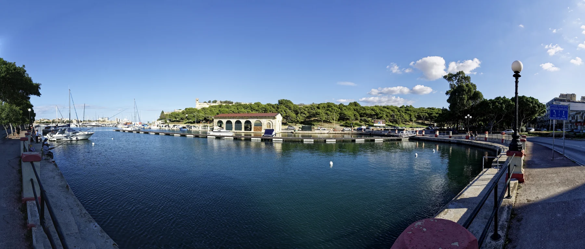

Pietà changes quickly between the lower Marsamxett waterfront and the higher Guardamangia streets. The locality label alone cannot tell you the slope, outlook, access, noise or daily route of a home.

Lower Pietà waterfront, photographed 9 October 2017 — Txllxt TxllxT / Wikimedia Commons, CC BY-SA 4.0. Proportionally resized to WebP without crop or retouching. This dated locality view does not prove a listed home’s outlook, proximity, access or present waterfront conditions.LOWER PIETÀ
Read the harbour edge street by street.
The Local Council places lower Pietà at the inner part of Marsamxett Harbour, where development followed a former valley and changing shoreline. Marina and shore roads can orient a viewing, but they do not make every address waterfront, level or quiet.
HIGHER GUARDAMANGIA
Elevation changes the brief.
Guardamangia developed on the higher promontory, with the former St Luke’s Hospital area part of the later urban story. Confirm the exact entrance, street gradient, lift, stairs and daily route at the actual property.
BEFORE THE VIEWING
The address does more work than the area label.
Nearby locality names can share one map viewport while describing different property contexts. Keep Pietà, Msida, Floriana, Santa Venera and Ta’ Xbiex separate unless the verified address says otherwise.
01 / ACCESSTest the real approach.
Check the street, gradient, entrance, stairs, lift and loading point. Do not infer level access from a harbour photograph or a broad locality label.
02 / OUTLOOKLook from the actual rooms.
A lower-Pietà address does not automatically provide a marina view. Confirm orientation, floor, obstructions and current surroundings in person.
03 / BOUNDARIESKeep mixed labels explicit.
“Pietà / Msida” needs clarification before it becomes a location claim. The neighbouring locality is not a silent synonym.
04 / DAILY ROUTEUse exact endpoints.
Walking, bus, driving and taxi questions require the property position, destination, mode and time. One overview map cannot answer them.
VERIFIED LOCAL EXAMPLES
Concrete anchors, no ranking.
These official and operator-backed examples help frame a viewing. They are not a complete local directory and are not described as nearest, best or always open. Check current services, access, menus and schedules directly.
PRIMARY CARE
Pietà Community Clinic
Primary HealthCare currently lists the clinic at 11, “Il-Pellikan”, K Mifsud Street. Appointments and available services remain direct current checks.
MyConvenience lists Gwardamangia 1 at 18 Triq il-Mimosa. This confirms one everyday-shopping example, not a complete retail census or fixed opening hours.
The operator places Ristorante La Vela on Triq ix-Xatt beside the marina. It is a concrete dining example, not a quality ranking or proximity claim for every home.
Heritage Malta identifies Villa Guardamangia on Telgħa ta’ Gwardamanġa as an 18th-century villa and conservation project. Villa Frere is another specific Pietà anchor, but historic event pages do not prove routine present access. Check the operator before planning a visit.
No waterline becomes a route.
This edition draws no administrative border, straight-line shortcut, harbour crossing, ferry or generic walking path. Walking geometry, bus schedules, current car-traffic estimates and taxi-price observations remain separate sources with exact endpoints and timestamps.
LIGHTWEIGHT 2D ORIENTATION
Load the Pietà overview only when you need it.
The map provides broad orientation around lower Pietà, Guardamangia and neighbouring labels. It deliberately draws no locality boundary, property route or journey time and loads from OpenStreetMap only after your click.
No ranking, fixed opening hours, property-specific route, guaranteed view, parking claim, accessibility promise, locality-wide walkability or journey time is claimed.